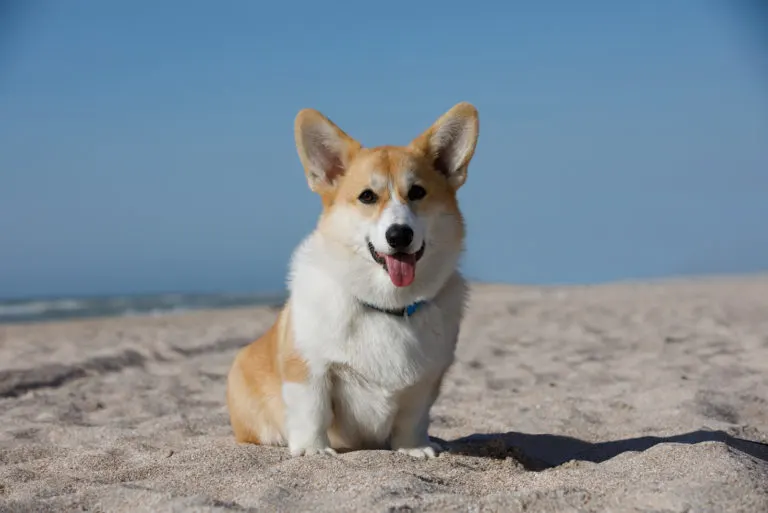
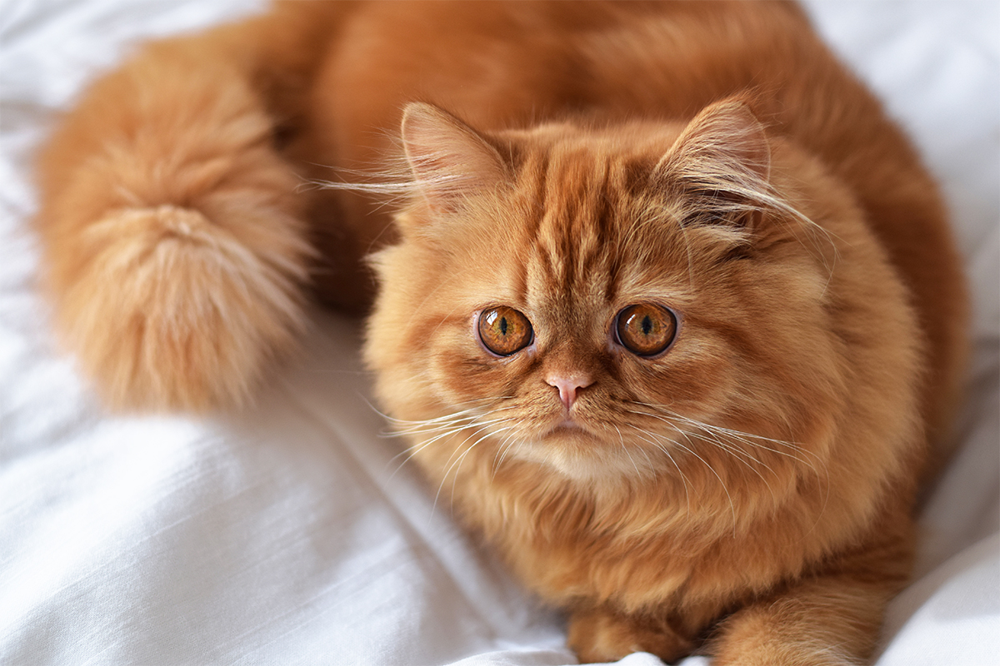
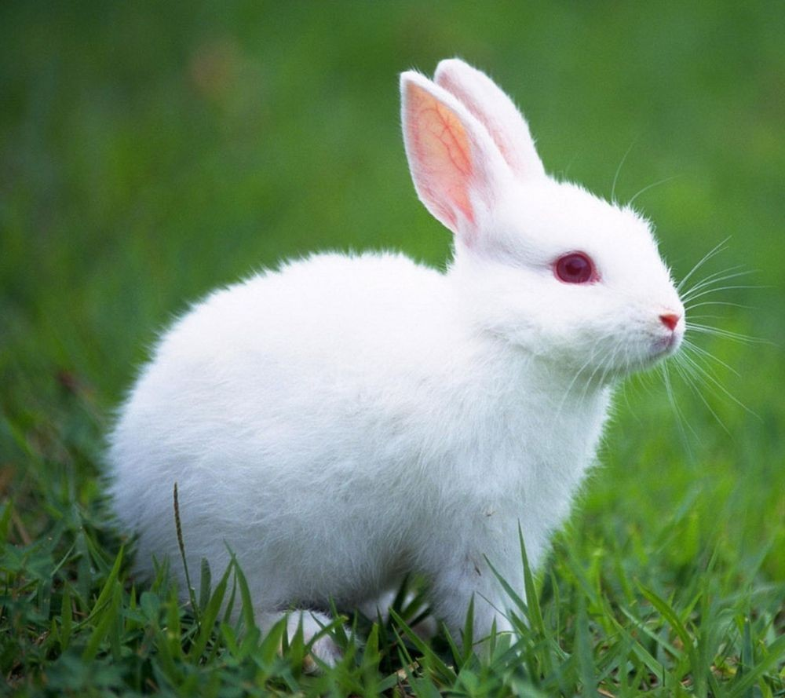
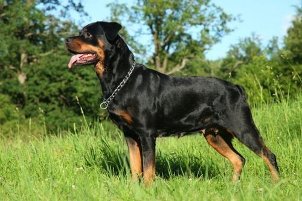

| Nama | Jenis | Usia | Foto | Deskripsi |
|---|---|---|---|---|
| Max | Anjing | 2 Tahun |  | Ramah dan aktif, cocok untuk keluarga dengan anak-anak. Menyukai jalan-jalan dan bermain bola. |
| Whiskers | Kucing | 3 Tahun |  | Penyayang, suka dipangku, dan sangat tenang. Sangat suka bermain dengan tali dan tidur di tempat yang hangat. |
| Bella | Kelinci | 1,5 Tahun |  | Sangat lembut dan suka dibelai. Membutuhkan perhatian khusus pada makanannya dan tempat yang aman untuk bermain. |
| Rocky | Anjing | 4 Tahun |  | Setia dan penjaga yang baik. Cocok untuk menjaga rumah dan sangat responsif terhadap perintah dasar. |